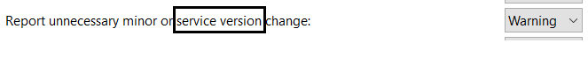
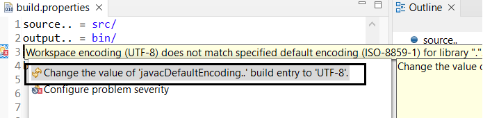

Here are descriptions of some of the more interesting or significant changes made to the Plug-in Development Environment (PDE) for the 4.21 release of Eclipse. They are grouped into:
API Tools |
|
| Micro is changed to service |
All the usage of micro version in the preference as well as the error/warning messages has been changed to service version.
 |
PDE Compiler |
|
| Quick for fixing encoding in build.properties |
A new quick-assist has been added for fixing encodings specified in build.properties that are out of synch with the workspace encoding.
 |